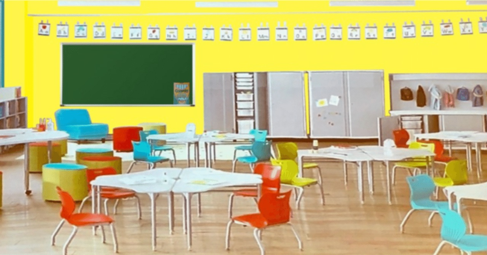

社内でAIをどこまで認めるか決めきれていない会社に向けた記事です。
2026年9月2日、ニューヨーク市が公立学校でのAI利用を制限する方針を発表しました。教育のニュースですが、市が公開している方針の本文にあたると、中身は「AIを禁止する」ではなく、どこで禁止してどこで許すかを用途ごとに書き分けた文書でした。その分け方が、中小企業のAI利用ルールにほぼそのまま使えます。
賛否は扱いません。線の引き方だけを見ます。数字と文言は、市の方針本文（一次資料）から取っています。
何が決まったのか
ニューヨーク市教育局（NYCPS）が2026-27年度に適用する方針です。生徒が直接触る生成AIの扱いと、端末を1人で使う時間の2つが、学年帯ごとに決められました。
- 2K（4歳児クラス）から2年：AIは禁止。端末を1人で使う時間もなし
- 3年から5年：AIは禁止。端末は1日30分までを推奨
- 6年から8年：AIは禁止。端末は1日45分までを推奨
- 9年から12年（高校）：承認され審査を通ったプログラムに限り可。端末の時間は学校・科目による
禁止の対象は、生徒が直接触る生成AIです。教員が主導して全体やグループの指導に使う分には、端末の利用は認められています。
高校生は全員、45分のAIリテラシー講座を2本受けることが必須になりました。内容はAIの仕組み、データのプライバシーと偏り、学校での適切な使い方です。
期間も切ってあります。恒久ルールではなく2026-27年度の措置で、生徒・教員・保護者・議員・組合・専門家からなる委員会が2027年4月に提言をまとめると明記されています。
なお、対象となる児童生徒がおよそ60万人という規模は、市の方針本文ではなく当日の報道によるものです。
出典：NYC Public Schools「Guidance on Artificial Intelligence and Screen Time」2026-27年度（一次資料） 方針本文を見る
経営者が読むべきなのは、教職員についての段落
ここが本題です。生徒ではなく、働く側にどう線を引いたか。方針にはこう書かれています。
- 使ってよい：授業の設計・準備、事務作業
- 使ってはいけない：採点、生徒の行動の監視、クラス配置・進級・卒業など生徒の処遇を決める判断
そのうえで、責任の所在が1行で書き足されています。
教員は、自分が作り出したものの質・正確さ・適切さについて引き続き責任を負う。AIは教育者を助けることはできるが、専門的な判断に取って代わるものではない。（方針本文より、編集部訳）
準備には使ってよく、評価と処遇の判断には使ってはいけない。出したものの責任は人が持つ。この3行が、そのまま会社のルールになります。
AIが向いているのは、材料をそろえる、たたき台を作る、下調べをするといった判断の手前の作業です。人事評価、契約の打ち切り、採否の決定のように、決めた理由を人に説明しなければならない仕事には向きません。理由を説明できないものを判断に使うと、聞かれたときに答えられなくなります。
ツールを名指しし、週あたりの分数まで決めている
高校で使ってよいツールの決め方も実務的です。市が中央で承認したのは5本だけ。Quill、Edia、Brisk Teaching、Playlab、Intel AI-Ready Schoolsです。どの高校もこの5本から申請でき、審査は個別に行われます。生徒1人が参加できるのは1つのプログラムだけ、という制限もついています。
さらに、想定する使用量がツールごとに書かれています。
- Quill：週15分（10分から15分の課題を週1回）
- Edia：週20分（授業内の練習のみ。宿題では使わせない）
- Brisk Teaching：週20分から40分（1コマ10分から15分を週1回から2回）
- Playlab：週45分（学期に2課題）
- Intel AI-Ready Schools：週1コマ（学期を通して授業内で）
「AIを導入した」で終わらせず、どのツールを、誰が、週に何分使うのかまで決めている。ここは会社でもそのまま真似できます。
選定の基準も公開されていて、生徒が自分で考える部分は生徒に残すツールを選んだと書かれています。答えを出してくれるツールではなく、考える過程を支えるツールを選んだ、ということです。
自分の審査が何を見ていないかを、自分で書いている
ニューヨーク市では、生徒が触るソフトはすべてERMAという審査を通す決まりです。ニューヨーク州教育法2-dに基づき、業者にデータの扱いを契約で約束させ、何を集めて何で守るのかを説明させる仕組みになっています。
そのうえで、市はこう書き足しています。ERMAが現在見ているのはデータのプライバシーとセキュリティであり、アルゴリズムの偏り、公平性への影響、教育効果はERMAでは扱っていない。これから評価する力をつけていく、と。
できていないことを自分で書いてある方針は、あまり見ません。社内ルールでも、今の自社のチェックが何を見ていて何を見ていないのかを1行書いておくと、あとで問題が起きたときに議論が早く進みます。
例外を、制限より先に書いている
方針には、制限してはいけないものが先に書かれています。個別教育計画（IEP）や504プランで定められた支援技術は、全学年で対象外。多言語の生徒・英語学習者が必要とするツールも引き続き使えます。市の言葉ではこうです。
この方針が制限するのは不必要なAIとスクリーンの利用であって、必要な利用ではない。（方針本文より、編集部訳）
制限を作るときに、制限してはいけないものを先に決めておく。これをやらないと、現場が止まります。
会社の1枚に移すと、6項目になる
日本の学校に同じ内容を当てはめる話ではありません。使えるのは枠組みのほうです。6つに整理しました。30分あれば1枚作れます。
1. 全員一律にしない。習熟度で分ける
ニューヨーク市は学年で切りました。会社なら、AIに触った経験がある人とない人で、当面の可否を分けても構いません。
2. 用途で分ける
準備と事務は可。評価と処遇の判断は不可。ここを書き分けるだけで、社内の迷いはかなり減ります。
3. 使ってよいツールを名指しする
何本でも構いませんが、リストにない道具は使わないと決める。増やすときは申請して増やす。
4. 使用量の目安を書く
週に何分、どの場面で、を1行。導入したのに誰も使っていない状態と、何にでも使ってしまう状態の両方を防げます。
5. 例外を先に書く
制限してはいけないものを先に決めておくと、現場が止まりません。
6. 期限を切る
恒久ルールにしない。1年後に見直すと書いておく。AIの前提は1年で変わります。
やらないほうがいいこと
「AIの使用は原則禁止」の一行だけで終わらせないことです。それだと、こっそり使う人が出て、何がどう使われたのか会社が把握できなくなります。禁止するなら、どこまでは使ってよいかを同じ紙に書く。ニューヨーク市もそうしました。
まとめ
- ニューヨーク市は2026-27年度、2Kから8年生について生徒が直接触る生成AIを認めない方針を出した
- 中身は全面禁止ではなく用途ごとの書き分け。教職員は授業準備と事務には使ってよく、採点・行動監視・進級や卒業の判断には使えない
- 出したものの質・正確さ・適切さの責任は人が持つ、と明記されている
- 高校で使えるツールは5本に絞り、週あたりの使用時間まで決めている
- 自分たちの審査がプライバシーとセキュリティしか見ていないことを、市が自分で書いている
- 会社に移すなら、習熟度で分ける／用途で分ける／ツールを名指しする／使用量を書く／例外を先に決める／期限を切る、の6項目
まずは「準備には使ってよい、判断には使わない」の1行を紙に書くところからで十分です。それだけで、社内の「使っていいんですか」という問い合わせはほとんど消えます。
「禁止か解禁かの二択にしないほうが、現場は動きます。作業をAIに渡して空いた時間を、人にしかできない仕事にどう回すか。ルールはそのために書くものだと考えています」（株式会社AIdollargame 代表取締役 佐藤徳之介）
出典一覧
- NYC Public Schools「Guidance on Artificial Intelligence and Screen Time」2026-27年度（一次資料。学年別の可否、教職員の可否、5つのパイロットと使用量、ERMA、例外規定、2027年4月の提言はすべて本文から） https://www.schools.nyc.gov/about-us/vision-and-mission/guidance-on-artificial-intelligence-full
- NY1「New York City bans AI use in schools through eighth grade」2026年9月2日（発表日と報道された対象規模） https://ny1.com/nyc/all-boroughs/news/2026/09/02/new-york-city-bans-ai-use-in-schools-through-eighth-grade
- NBC News「Mamdani expected to announce AI ban in NYC schools for young students」2026年9月2日 https://www.nbcnews.com/tech/tech-news/mamdani-expected-announce-ai-ban-nyc-schools-young-students-rcna595719
- NYC Public Schools「New York City Public Schools Announces Release of AI Guidance for Educators and School Leaders」2026年3月24日（2026年春の意見募集の経緯） https://www.schools.nyc.gov/home/2026/03/24/new-york-city-public-schools-announces-release-of-ai-guidance-for-educators-and-school-leaders
この記事と同じ内容を、公式noteでも公開しています。 公式note 記事一覧
社内のAIルール、1枚目を一緒に書きます
どの業務までを可にするか、判断に関わる線をどこに引くか、使ってよいツールをどう決めるか。実際の業務に合わせて整理します。初回のご相談は無料です。
無料相談を予約する →